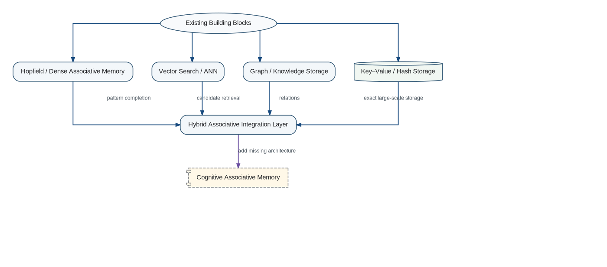
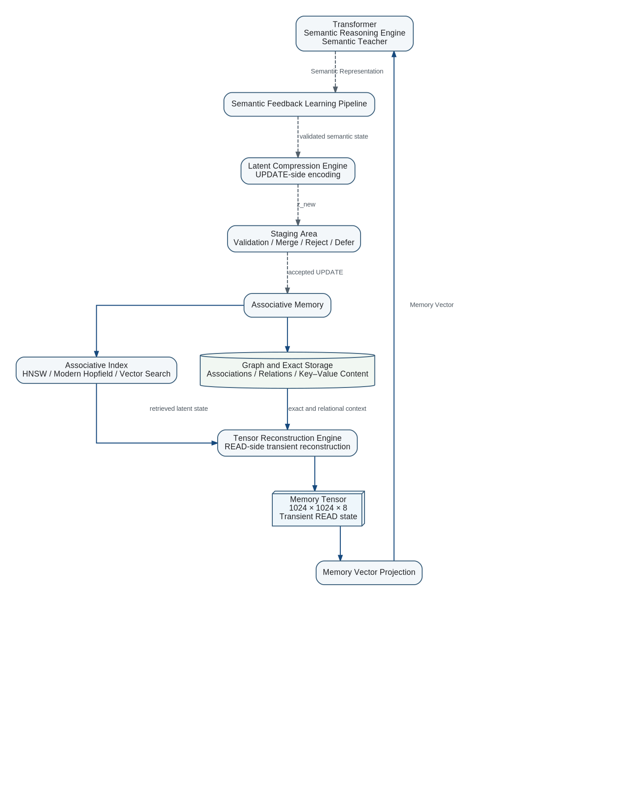

The required Associative Memory is not available as one ready-made component. However, several established families already provide important parts of the target behavior. The practical implementation strategy is therefore to combine existing mechanisms while explicitly engineering the missing state, interface, learning, and lifecycle properties.

Hopfield and Dense Associative Memory
Classical Hopfield networks, Dense Associative Memory, and modern continuous associative-memory formulations already provide content-addressable retrieval, pattern completion, and convergence toward attractor states. These mechanisms are useful candidates for the neural activation core.
They still require continual knowledge insertion, explicit separation of short-term activation from long-term structure, dynamic association creation and removal, controlled forgetting, scalable external storage, and the Cognitive interface contract in which only READ produces a Memory Vector.
Sparse Distributed Memory
Sparse Distributed Memory provides distributed storage, retrieval from incomplete cues, and graceful degradation under partial damage. These properties fit the requirement that knowledge should not reside in one fragile location.
It must be extended with learned semantic addressing, weighted spreading activation, evolving topology, importance and usage statistics, and canonical projection from active Memory State into a Memory Vector.
Vector Search and Approximate Nearest-Neighbour Systems
Vector databases and approximate nearest-neighbour libraries can efficiently retrieve candidate memory elements from very large collections. They are valuable retrieval accelerators but are not sufficient as Associative Memory by themselves.
The missing functions include persistent dynamic activation, multi-hop association, state changes caused by feedback, integration of multiple retrieved elements into one Memory State, and explicit READ projection into the canonical Memory Vector.
Graph and Knowledge Storage
Graph databases and knowledge graphs provide explicit nodes, typed relations, traversal, indexing, and durable structured storage. They can serve as a structural substrate for associations and exact relationships.
Cognitive additionally requires learned connection strengths, activation propagation, implicit distributed knowledge, online formation of associations, short-term state, and a latent canonical interface to the Transformer.
Key–Value and Hash Storage
Key–value systems can retain enormous volumes of exact data economically. Associative mechanisms may identify relevant keys, while conventional storage retains documents, events, binary objects, exact values, and large structured records.
This division allows neural components to perform semantic association while classical storage performs reliable, inexpensive retention. It also preserves the project principle that neural networks and deterministic algorithms should be used where each is strongest.
Recommended Initial Hybrid
The most realistic initial implementation is a hybrid pipeline: a learned query encoder activates neural and graph associations; vector search proposes candidates; graph traversal and spreading activation construct dynamic Memory State; key–value storage supplies exact content; and an explicit READ operation projects the resulting state into the canonical Memory Vector.

Query → Associative Index Candidate Retrieval → Activated Semantic Context Graph Traversal / Exact Content → Tensor Reconstruction Engine → Memory Tensor 1024 × 1024 × 8 → Memory Vector → Transformer → Semantic Representation → Semantic Feedback Learning Pipeline → Latent Compression Engine → Staging Area → Memory State
Required Additions Before the Target Is Reached
The combined implementation must still provide: persistent and short-term Memory State; spreading activation; online knowledge accumulation; semantic equivalence across wording and language; canonical Memory Vector normalization; explicit READ and UPDATE operations; Answer-to-Memory feedback that changes state without generating a vector; controlled forgetting; structural connection state; and later Sleep-like offline optimization.